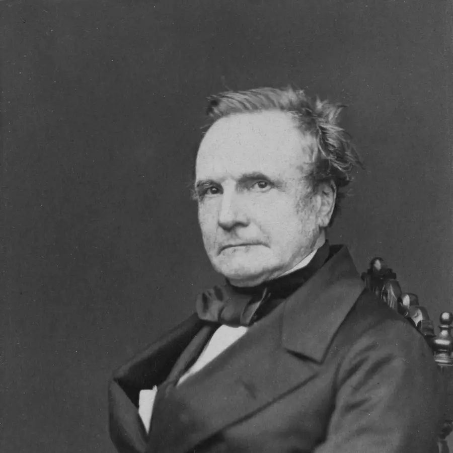
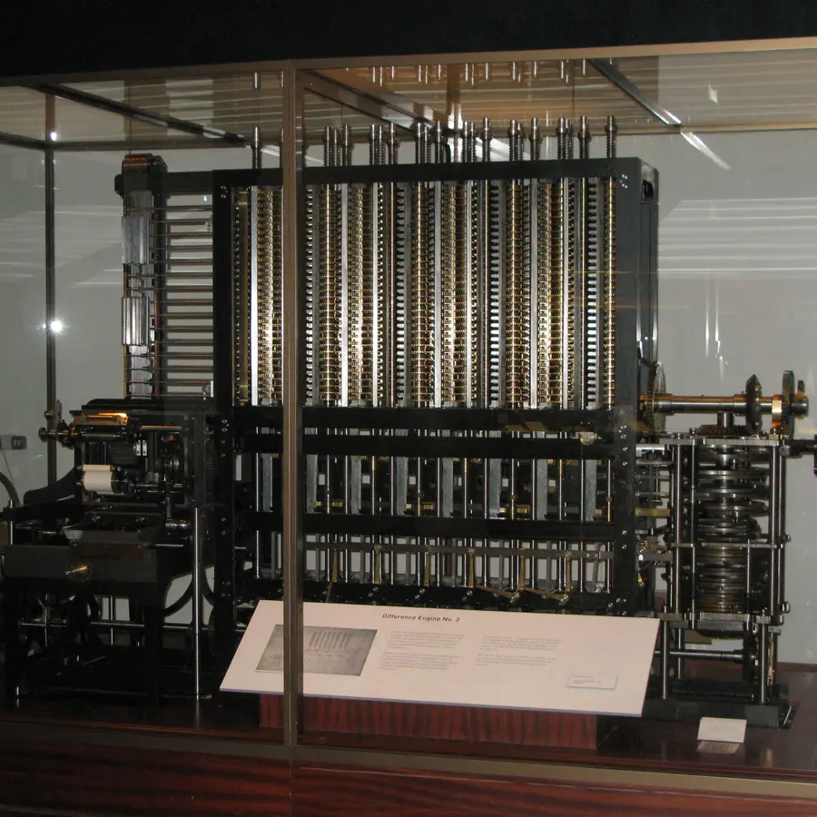
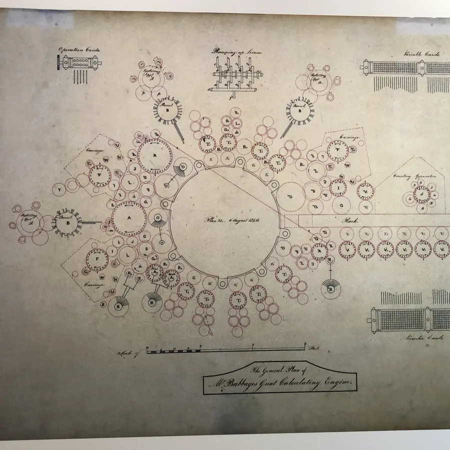
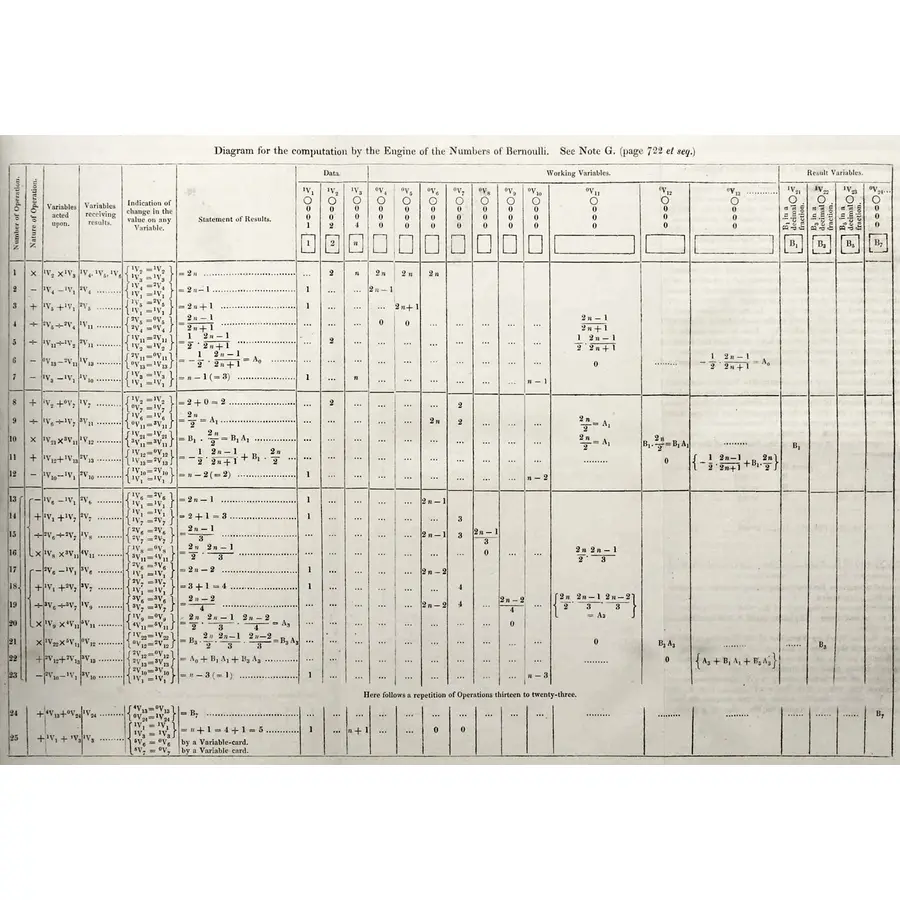
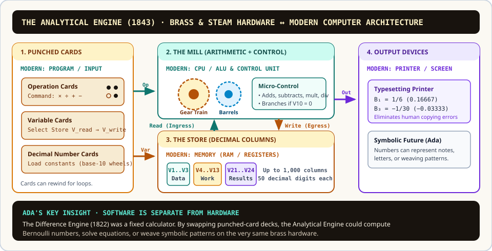

Ada Lovelace · Analytical Engine Studio
1843 Note G · Punch Cards · LoomStudio Mastery Challenges
| Col | Role | Value | Prev | State |
|---|
| Op | Card Instruction | Result |
|---|
Ada realized numbers are just symbols. Each column of punched holes is simultaneously a binary code, a decimal integer, a musical chord, and a row of silk heddles lifted on a Jacquard loom.
Who Was Ada Lovelace?
Augusta Ada King, Countess of Lovelace (December 10, 1815 – November 27, 1852) was a British mathematician and writer celebrated as the world’s first computer programmer. Her father was the famous Romantic poet Lord Byron, who left England when Ada was one month old. Hoping to steer Ada away from her father’s volatility, her mother — Anne Isabella Milbanke, herself mathematically gifted — arranged rigorous tutoring in mathematics, logic, and astronomy.
At seventeen, mentored by scientist Mary Somerville, Ada attended a London salon hosted by inventor Charles Babbage and saw a working section of his Difference Engine. While visitors admired its brass wheels, Ada asked how the machine worked and soon began studying Babbage’s far more ambitious design: the Analytical Engine, a steam-driven, programmable mechanical computer.
In 1842, Italian mathematician Luigi Menabrea published a French summary of Babbage’s 1840 Turin lectures. Babbage invited Ada to translate it for Taylor’s Scientific Memoirs. She translated the paper and appended seven essays — Notes A through G — nearly three times as long as Menabrea’s original text. Published in 1843, Note G laid out a 25-operation algorithm to compute Bernoulli numbers, while Note A articulated why a programmable machine could manipulate music, language, and symbols beyond pure arithmetic.
Real Machines, Real Documents
Every concept in the studio above connects to surviving historical artifacts — a portrait photograph, a modern working replica of Babbage’s Difference Engine, his 1840 engineering blueprint, and Ada’s 1843 printed operation table. Select any image to enlarge and inspect details.




A Life & Legacy Ahead of Its Time
Switch between Track and List views or launch the tour to see how Ada’s 1843 work connects 19th-century brass gears to 20th-century software.
- Born December 10, 1815 in London as Augusta Ada Byron, daughter of poet Lord Byron and mathematician Anne Isabella Milbanke.
- After Byron separates from the family, Ada’s mother designs a rigorous education in mathematics, logic, and science.
- Recovering from measles and temporary paralysis, Ada studies mathematics intensively, mentored by astronomer Mary Somerville.
- At age 17, Ada meets Charles Babbage in London and inspects his Difference Engine prototype, asking to borrow its blueprints.
- Marries William King (later created Earl of Lovelace), becoming Countess of Lovelace while continuing mathematical studies with Augustus De Morgan.
- Babbage presents the Analytical Engine in Turin; Italian mathematician Luigi Menabrea attends and drafts an engineering summary.
- Menabrea publishes his sketch in French. Babbage invites Ada to translate it and expand it with her own analytical commentary.
- Publishes her translation plus Notes A–G in Taylor’s Scientific Memoirs (Vol. 3). Note G details the 25-operation Bernoulli algorithm, loops, and symbolic computing.
- Dies November 27, 1852 in London at age 36 and is buried beside her father in Hucknall, Nottinghamshire.
- Alan Turing cites “Lady Lovelace’s Objection” in his landmark paper Computing Machinery and Intelligence.
- The U.S. Department of Defense standardizes the safety-critical programming language Ada, numbered 1815 after her birth year.
- First annual Ada Lovelace Day is celebrated globally to honor women in science, technology, engineering, and mathematics.
Inside the Analytical Engine & Modern Code
Even though Babbage’s machine ran on steam and brass gears rather than silicon transistors, its logical blueprint contained the same four core subsystems found inside your phone or laptop today.
Central gear train that adds, subtracts, multiplies, and divides numbers sent from memory.
= CPU / ALUPlanned for up to 1,000 columns of 50 decimal gear wheels (0–9) storing data and results.
= RAM / RegistersThree separate decks: Operation cards, Variable address cards, and Decimal Number cards.
= Program / InputMechanical typesetter and curve plotter that recorded finished results automatically.
= Output
From 1843 Notation to Modern Python
| Concept | Studio / 1843 Idea | Modern Python |
|---|---|---|
| Assignment & Overwrite | V4 ← V4 − V1 |
v4 = v4 - v1 |
| Exact Rational Arithmetic | V11 ← V4 ÷ V5 |
v11 = Fraction(v4, v5) |
| Conditional Branch | If V10 = 0, jump to Op 24 |
if v10 > 0: ... |
| Repeated Inner Loop | While V10 > 0, rewind Ops 13–23 |
while v10 > 0: |
| Counted Outer Loop | Op 25: V3 ← V1 + V3; repeat |
for n in range(1, 5): |
Watch out for Python’s range(1, 5): it runs for 1, 2, 3, 4 and stops before 5 — a classic off-by-one boundary tested in the Practice section.
How does Ada connect to Alan Turing’s 1950 paper?
Was the Analytical Engine ever built?
Why does Babbage’s decimal card differ from a modern binary card?
Decoding Note G & History’s First Printed Bug
Bernoulli numbers appear in sums of powers (like 1² + 2² + … + k²) and series expansions across calculus. Because each new Bernoulli number depends on every previous one, computing them by hand is tedious — making it a tough stress test for a programmable machine.
V5 / V4 instead of V4 / V5. Because V4 = 2n − 1 and V5 = 2n + 1, swapping those two registers flips the fraction upside down (for n = 1, producing 3/2 instead of 1/6!). Toggle 1843 Op 4 Bug: On in Tab 1 to watch this 183-year-old bug propagate live across the Store.
Indexing difference & sign note: Ada numbered the nonzero terms B₁, B₃, B₅, B₇ (1/6, −1/30, 1/42, −1/30). Modern textbooks index those same even terms as B₂, B₄, B₆, B₈ (starting with B₀ = 1 and B₁ = −1/2). Also notice Operation 24: the 1843 print listed + on transfer to V24, expecting the Result column to invert the negative accumulator V13 so B₇ = −1/30.
Solving for B₂ (Ada’s B₁) Step by Step
B₀ + 3 × B₁ + 3 × B₂ = 0Modern recurrence equation whereB₀ = 1andB₁ = −1/2are already known.1 + 3 × (−1/2) + 3 × B₂ = 0Substitute the known starting fractions.−1/2 + 3 × B₂ = 0Combine1 − 3/2 = −1/2.B₂ = (1/2) ÷ 3 = 1/6Solve for the unknown term — matching Ada’sV21 = 1/6!
Saving earlier Bernoulli numbers in Store columns V21, V22, V23 avoids recomputing them from scratch — an early form of memoization.
Read the complete 1843 Menabrea translation and Notes A–G online.
Trace It Yourself: Predict the Registers
Before letting the simulator run automatically, try acting as The Mill yourself. Unlike older worksheets that accidentally showed earlier answers on the next row, every destination stays hidden until you solve and check it.
| Step | Operation | Writes To | New Value (integer, decimal, or fraction e.g. 7/9) |
|---|
Key Contributions, Vocabulary & Legacy
Note G laid out exact Store columns, operation sequence, and control flow for an unbuilt general-purpose machine.
Operations 13–23 repeat an inner summation block while Operation 25 wraps an outer loop across n = 1, 2, 3, 4.
Operations 7 and 12 inspect whether V10 reaches zero to skip unnecessary inner passes — early if / else control flow.
Note A foresaw that machines manipulating numbers could represent music, words, or weaving patterns if properly encoded.
Swapping card decks transforms what the same brass mechanism computes — the core idea of programmable software.
Standardized as MIL-STD-1815 in her honor and still used in aviation, rail signaling, satellites, and safety-critical systems.
Vocabulary Reference
- Algorithm
- A finite, ordered sequence of unambiguous instructions that solves a problem or performs a computation.
- The Mill & The Store
- Babbage’s arithmetic unit (ancestor of the CPU) and column gear memory (ancestor of RAM and registers).
- Register Overwrite
- Writing a new value into a register replaces whatever value sat there previously; old results must be saved elsewhere first.
- Conditional Branch
- Testing a condition (such as
V10 = 0) to decide which card operation executes next. - Loop (Inner & Outer)
- Rewinding cards to repeat instructions: Note G nests an inner summation loop (Ops 13–23) inside an outer term loop (Op 25).
- Trace Table
- Tracking each register’s contents by hand step by step to verify logic and catch bugs before running code.
- Symbolic Representation
- Encoding non-numeric ideas — musical pitches, letters, loom threads — as numbers a machine can process.
- Decimal vs. Binary Cards
- Babbage’s Engine used base-10 (0–9) decimal wheels, whereas 20th-century electronic computers used base-2 (0/1) binary.
Continue Exploring in ClassroomOS
Practice & Debugging Problems
Completed: 0 / 9Test your grasp of Note G, registers, loops, punched cards, and debugging.
Easy1. In what year did Ada Lovelace publish her translation of Menabrea’s paper together with Notes A–G?
Easy2. Which part of the Analytical Engine stored up to 1,000 numbers in columns of gears, acting as the ancestor of modern RAM?
Easy3. What mathematical sequence did Note G’s 25-operation algorithm compute?
Medium4. In Babbage’s hardware, what number base did the Store gear wheels actually use (unlike modern binary electronic computers)?
Medium5. On an 8-bit modern binary punch card (hole weights 128, 64, 32, 16, 8, 4, 2, 1), holes 1, 3, and 8 are punched. What decimal number does this encode?
Medium6. In Note G, Operation 7 computes V10 ← V3 − V1. When n = 4, how many times does the inner loop (Operations 13–23) execute before exiting?
Challenge7. Which statement captures Ada’s most radical insight in Note A (1843)?
Debug8. In the 1843 printing of Note G, Operation 4 contained a famous typo: V5 / V4 instead of V4 / V5. With n = 1 (V4 = 1, V5 = 3), what wrong value of B₁ does that typo cause?
Debug9. This Python loop should compute all 4 terms n = 1, 2, 3, 4 like Note G, but only runs 3 times: for n in range(1, 4):. What fixes this off-by-one bug?
range(start, stop) stops before stop, so range(1, 5) produces 1, 2, 3, 4.